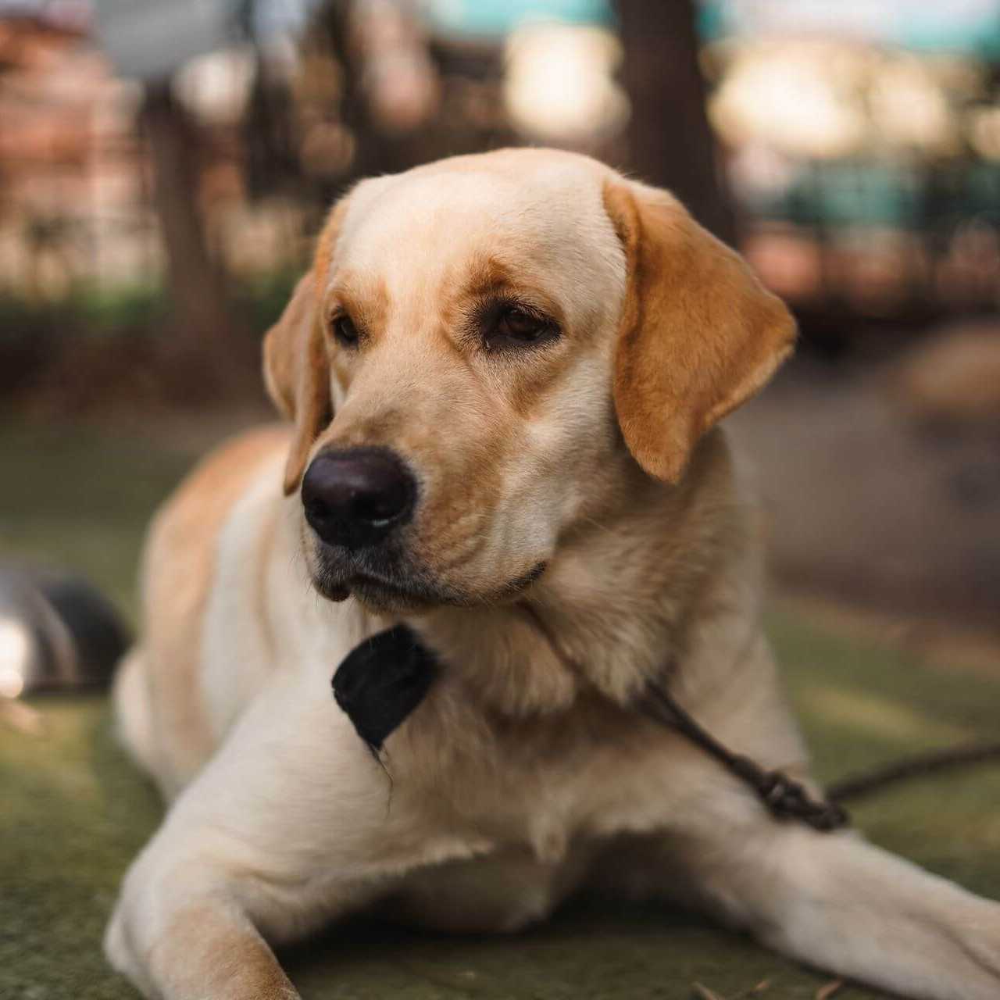
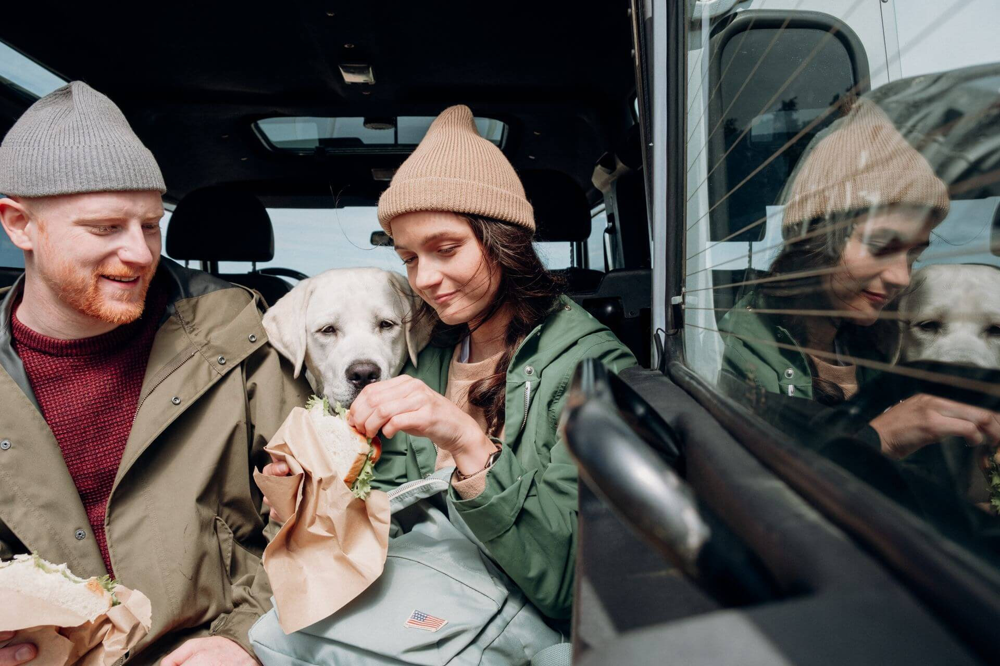
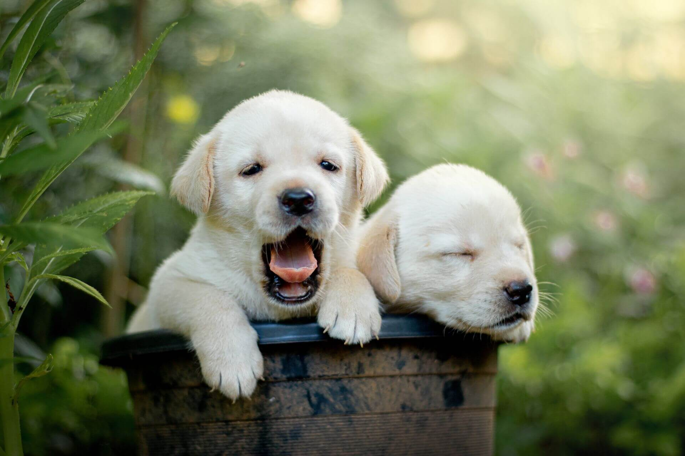
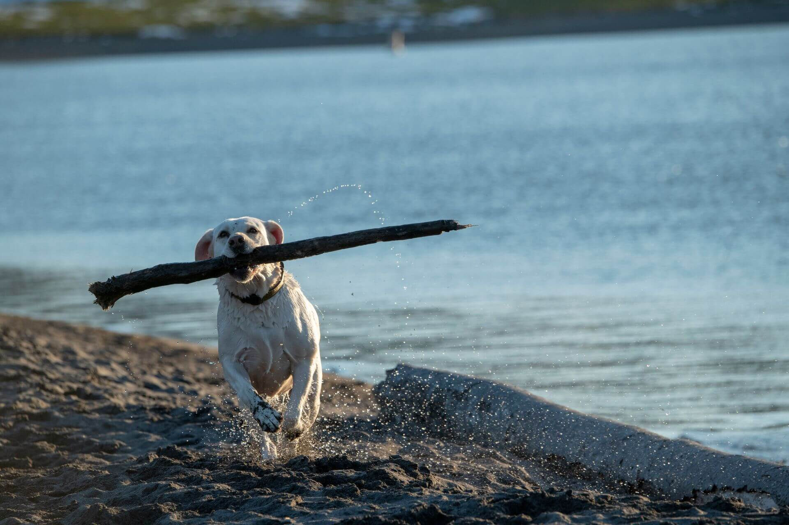

Лабрадор-ретривер
Одна из самых добрых и популярных собак в мире. Лабрадор дружелюбен, умён и предан семье, а его лёгкий характер прощает многое даже начинающим владельцам.

- Вес
- 25–36 кг
- Рост в холке
- 54–57 см
- Жизнь
- 10–14 лет
- Энергия
- Высокая
- Линька
- Сильная
Характер
Лабрадор-ретривер ведёт родословную с канадского острова Ньюфаундленд, где его предки помогали рыбакам вытаскивать сети и доставать улов из ледяной воды. В XIX веке этих выносливых «водяных собак» завезли в Британию, где из них и сложилась порода в её нынешнем виде. От рабочего прошлого лабрадору достались любовь к воде, неутомимость и желание приносить пользу человеку, а главное, его фирменный мягкий и покладистый нрав.
Это одна из самых дружелюбных собак на свете, и доброта у неё в самой основе характера. Лабрадор привязывается ко всей семье без остатка, тянется к людям и плохо переносит одиночество, поэтому ему нужен дом, где он будет среди своих, а не сам по себе. К детям он терпелив и нежен, к гостям приветлив, и даже к незнакомцам относится скорее как к новым друзьям, отчего сторож из него выходит неважный, зато компаньон бесподобный.
При всей мягкости лабрадор остаётся подвижной и азартной собакой, которой нужно много движения, игр и общих занятий с хозяином. Его живой ум и желание угодить делают дрессировку настоящим удовольствием, недаром лабрадоры служат поводырями, спасателями и помощниками человека по всему миру. Без достаточной нагрузки эта энергия, впрочем, может выливаться в шалости, так что длинные прогулки и игры ему по-настоящему необходимы.
Отдельно стоит сказать о его знаменитой страсти к еде. Лабрадор готов есть почти всегда и почти что угодно, и этот неуёмный аппетит, забавный на первый взгляд, требует от хозяина внимания, чтобы собака не набирала лишний вес. Зато эта же черта делает лабрадора одним из самых простых в обучении: ради лакомства он с радостью освоит что угодно.
Характеристики
Размер
Крупная, крепкая и компактная собака. Рост в холке от 54 до 57 сантиметров, вес от 25 до 36 килограммов. Кобели массивнее сук, но в целом порода ладно и пропорционально сложена.
Шерсть
Короткая, плотная и жёсткая на ощупь, с густым подшёрстком и водоотталкивающим эффектом. Линяет заметно, особенно весной и осенью, но в уходе проста: достаточно вычёсывать раз в неделю.
Энергия
Высокая. Лабрадору нужны долгие прогулки, игры и плавание, которое он обожает. Без хорошей нагрузки эта деятельная собака начинает скучать и шалить.
Обучаемость
Превосходная. Лабрадор умён, внимателен и очень хочет угодить, а любовь к лакомствам делает дрессировку лёгкой и приятной. Недаром порода работает поводырями и спасателями.
Отношение к детям
Одна из лучших семейных собак. С детьми лабрадор терпелив, ласков и игрив, охотно становится их компаньоном и нянькой, разделяя любую возню.
Полезно знать: два типа
Внутри породы сложились два типа, не разделённых стандартом, но различных по складу. Английский (шоу-тип) более коренастый, массивный и спокойный, его разводят для выставок и семьи. Американский (рабочий тип) легче, поджарее и энергичнее, его ценят охотники и спортсмены за выносливость и азарт.
Здоровье
Лабрадор считается крепкой и в целом здоровой породой, но у него есть несколько особенностей, о которых полезно знать заранее. Ответственные заводчики проверяют здоровье родителей, поэтому щенка лучше брать именно у них.
Дисплазия суставов
Как у многих крупных пород, тазобедренные и локтевые суставы могут развиваться не идеально, что со временем сказывается на лёгкости движений. Проверка родителей, контроль веса и разумные нагрузки в щенячестве заметно снижают риск.
Склонность к лишнему весу
Знаменитый аппетит лабрадора оборачивается его главной слабостью: порода легко набирает вес. Выверенные порции, отказ от лишних подачек со стола и регулярные нагрузки берегут и фигуру, и суставы, и сердце собаки.
Зрение
Иногда встречаются наследственные особенности глаз, например катаракта или постепенные изменения сетчатки. Выбор щенка от проверенных родителей и регулярный осмотр у ветеринара помогают вовремя позаботиться о здоровье глаз.
Окрасы
Стандарт признаёт три окраса лабрадора. Все они однотонные, а на груди допускается небольшое белое пятнышко.

Палевый окрас охватывает оттенки от почти белого до песочно-рыжего. Чёрный — самый старый окрас породы, а шоколадный был признан позже остальных.
Кому подходит
Лабрадор-ретривер подходит почти всем, и в этом секрет его всемирной популярности. Это идеальная собака для семьи, в том числе с детьми, для активных людей и даже для начинающих владельцев, ведь его покладистый нрав и лёгкая обучаемость прощают многие ошибки. Лабрадору комфортно и в доме, и в квартире, если хозяин обеспечивает ему достаточно движения.
Лучше всего этой породе живётся там, где она чувствует себя частью семьи и не остаётся подолгу одна. Лабрадор тянется к людям всем существом и расцветает во внимании, общих играх и прогулках. Взамен он отдаёт безграничную преданность, добродушие и тот самый лёгкий характер, за который его так любят во всём мире.
А вот тем, кто ищет сторожевую собаку или готов оставлять питомца в одиночестве надолго, лабрадор не подойдёт: он слишком доверчив к чужим и слишком привязан к семье. Ему нужны движение, общение и внимание к рациону. Но если вы готовы разделить с ним активную и тёплую жизнь, лабрадор станет одним из самых добрых и верных друзей, о которых можно мечтать.
Лабрадор в жизни


